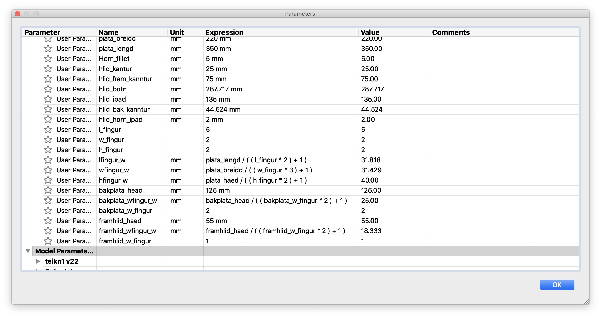
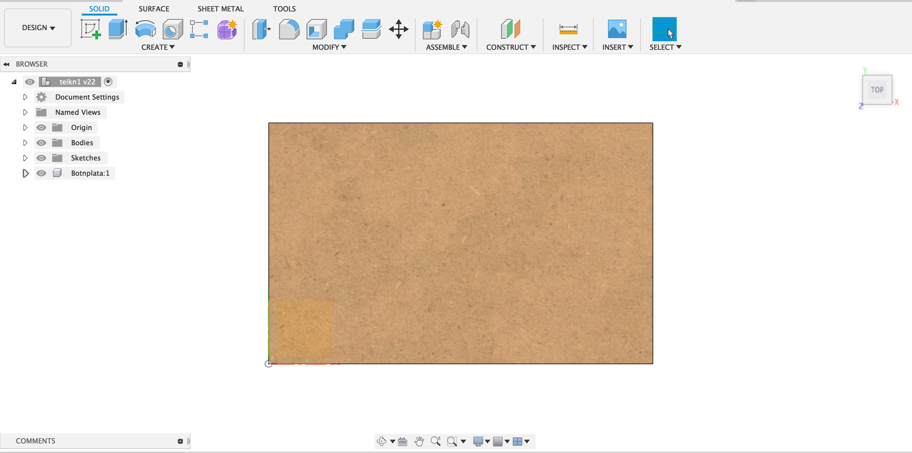
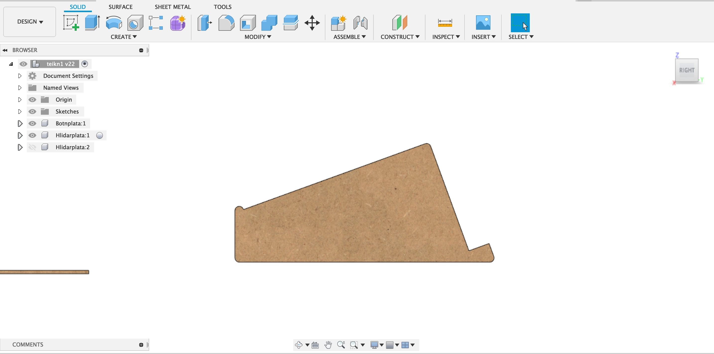
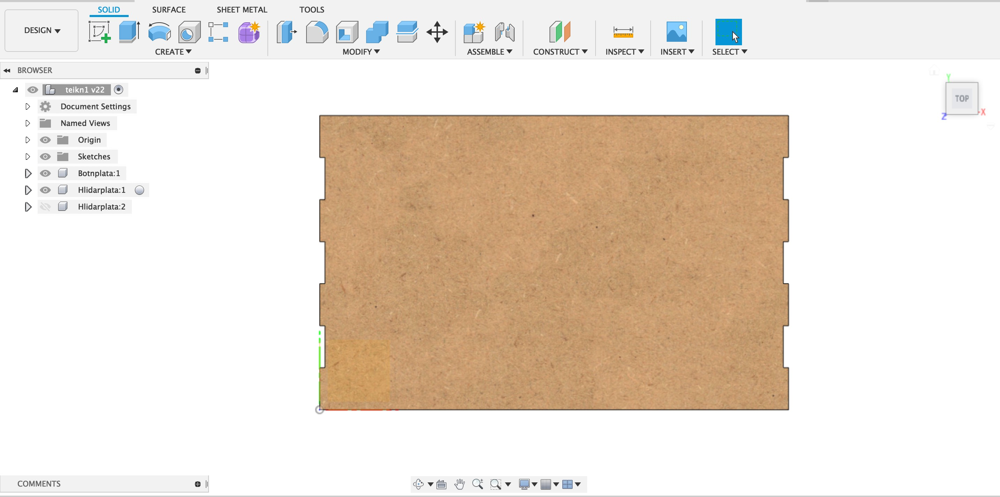
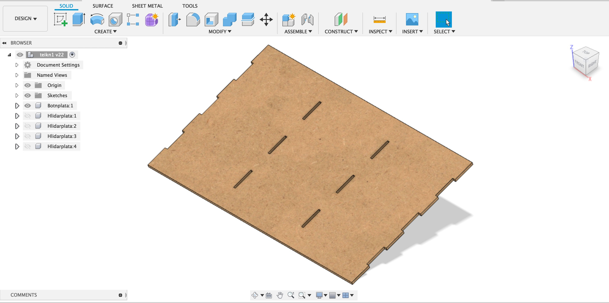
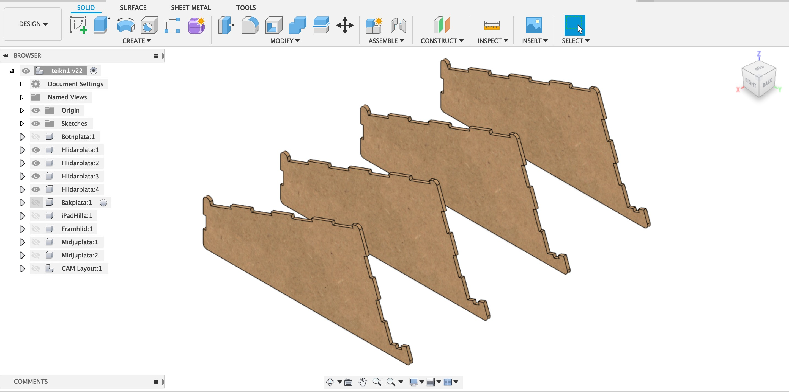
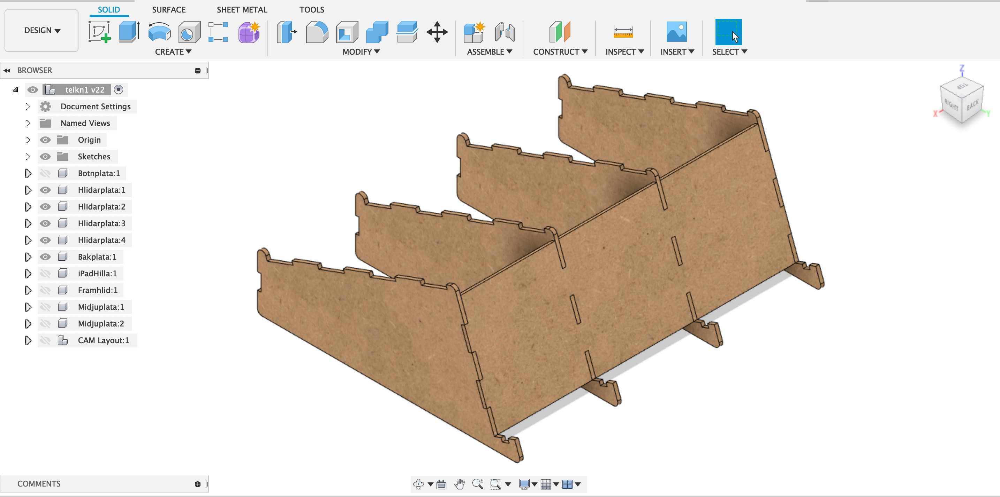
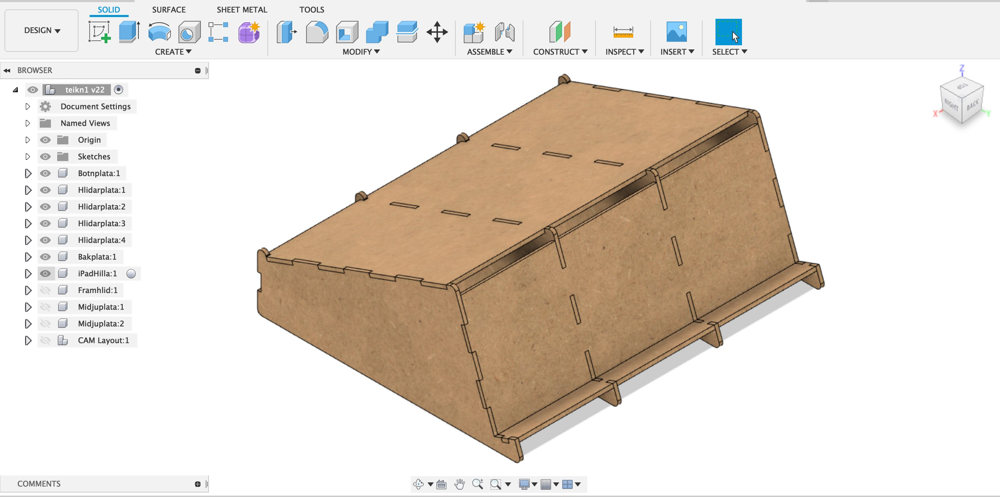
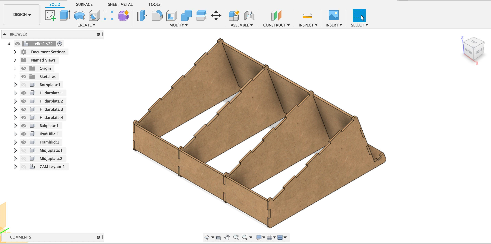
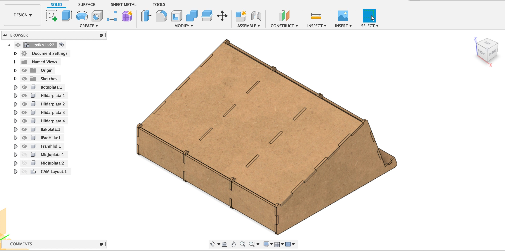

2 - Computer-aided design and cutting
Upphafið
Við upphaf verkefnisins þurfti ég að kynna mér aðeins aðferðir til þess að vinna verkefnið. Til þess fór ég á heimasíðu námskeiðisins og skoðaði kennslumyndband 1 og svo kennslumyndband 2
Þegar að þessi myndbönd voru búin ákvað ég að skoða þetta myndband.
Hugmyndaferli
Þegar að ég hafði náð mér í nægilega þekkingu fór ég og lagði höfuðið í bleyti.
Ég fékk fljótlega þá hugmynd að búa mér til tölvustand þar sem að einnig væri hægt að vera með stand fyrir iPad. Ég fór því á google og sló inn "press fit laser cut computer stand".
Niðurstaðan sem að ég fékk var eftirfarandi.
Þar sá ég strax flotta hugmynd sem að mig langaði til þess að hafa til hliðsjónar í mínu verkefni. Skjáskot af vefsíðunni má sjá hér að neðan.
Einnig fann ég þessa hugmynd sem að sjá má hér að neðan sem að mig langaði að reyna að sameina í hina til þess að ná markmiði mínu.
Upphaf hönnunar
Nú var hugmyndavinnu og undirbúningi lokið og komið að því að hanna standinn.
Ég opnaði því Fusion 360 og hófst handa.
Það sem að ég byrjaði á að gera var að skilgreina parametra fyrir verkefnið.
Þegar að það var komið hófst ég handa við að teikna upp hliðar og plötu undir tölvu.
Næst tók við mikil vinna þar sem að ég nýtti mér mikið myndbandið sem að ég nefndi áðan.
Erfitt er að lýsa ferlinu í þaula en nokkur skjáskot af ferlinu má sjá hér að neðan. Ef einhverjar spurningar eru um ferlið er best að horfa á myndbandið þar sem að ég fór eftir því.
Eitt sem að ég þurfti þó að gera var að bæta við fleiri parametrum og má sjá þá hér að neðan. 
Næst koma svo skjáskot úr ferlinu.       
Loka útkoman var svo að lokum þessi.

CAM undibúningur
Þegar að þrívíddar teikningu á hlutnum var lokið var komið að því að undirbúa standinn undir laserskurð.
Við þetta ferli notaði ég mikið þetta myndband þar sem að mjög vel er farið í það hvernig á að undirbúa teikningu undir CAM.
Ég byrjaði því á að fletja út standinn eins og sjá má hér að neðan.
Næsta skref var svo að búa til dxf skrá sem að ég gerði samkvæmt myndbandinu.
Laser skurður
Þegar komið var að því að skera út var farið með pdf skrár sem að gerðar voru í Inkscape yfir í laserskera. Þetta má sjá hér að neðan.
Nokkrar myndir úr skurðinum má svo sjá hér að neðan.
Þegar laser skurðurinn var búinn var þetta niðurstaðan, aðeins átti eftir að líma saman og festa standinn.
Niðurstaða
Þegar að öllu var lokið var lokaniðurstaðan þegar að búið var að líma hlutina saman þessi.

{kind=link}
Tímatafla
| Dagsetning | Lýsing | Tími í klst. |
| 03.02.2020 | Undirbúningur/hugmyndavinna og horft á kennslumyndbönd | 4.0 klst. |
| 04.02.2020 | Byrjað á CAD skjali, teikning á standi | 4.0 klst. |
| 05.02.2020 | Áframhaldandi CAD vinna, teikning á standi | 3.5 klst. |
| 07.02.2020 | Lokafrágangur á CAD skjali | 3.0 klst. |
| 08.02.2020 | Undirbúningur á skjali og laser skurður í Fablab | 2.0 klst. |
| 09.02.2020 | Lokafrágangur og líming á standi | 1.5 klst. |
| Samtals: | 18 klst. |
CAD model og .dxf skrár
Hér að neðan má svo sækja dxf skrá auk Fusion 360 skrá af tölvustandinum.